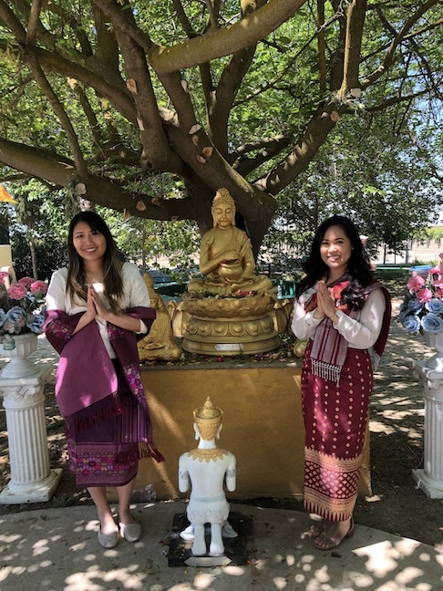

Mount. Fuji in Japan
Japan’s Mt. Fuji is an active volcano about 100 kilometers southwest of Tokyo.
Commonly called “Fuji-san,” it’s the country’s tallest peak, at 3,776 meters.
A pilgrimage site for centuries, it’s considered one of Japan’s 3 sacred mountains, and summit hikes
remain a popular activity. I would like to visit during the cherry blossom season and be able to enjoy
the outdoors in this beautiful country.